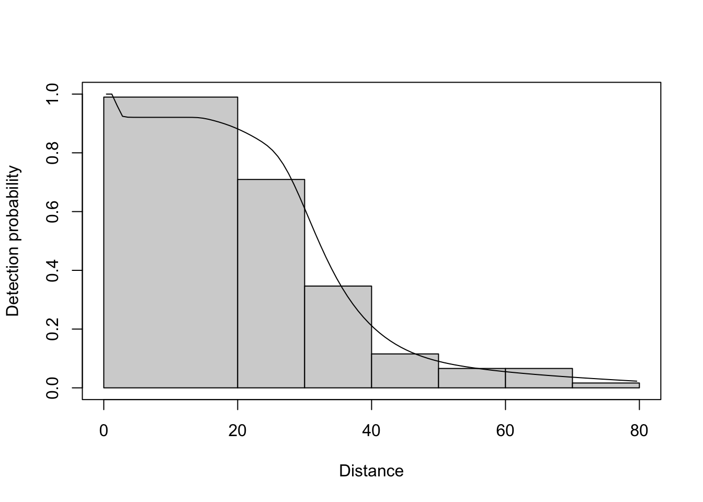
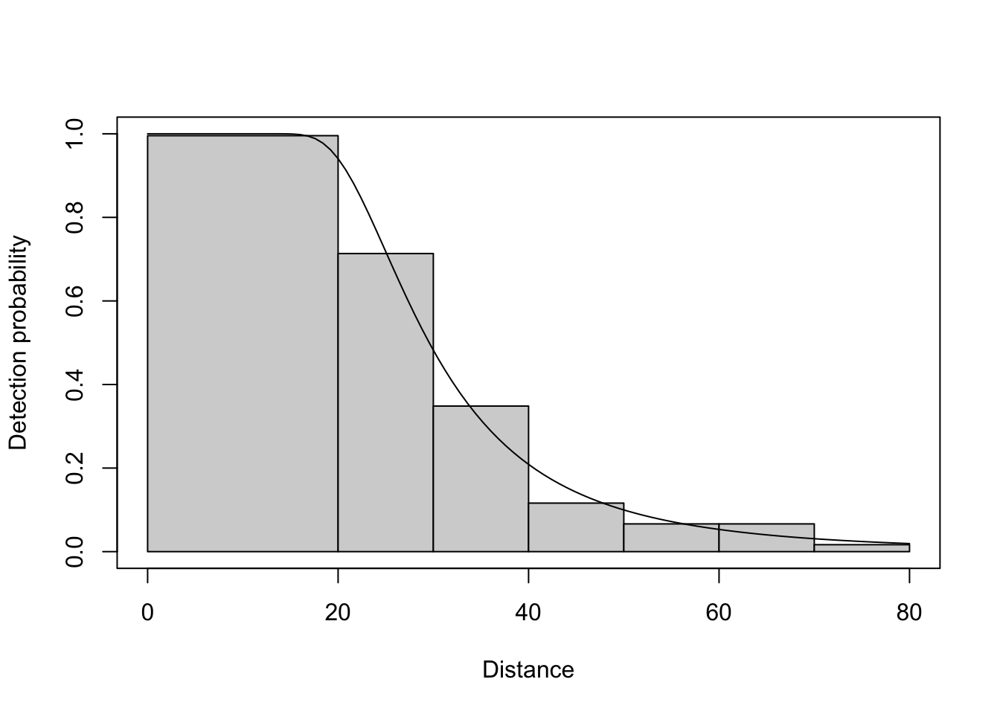
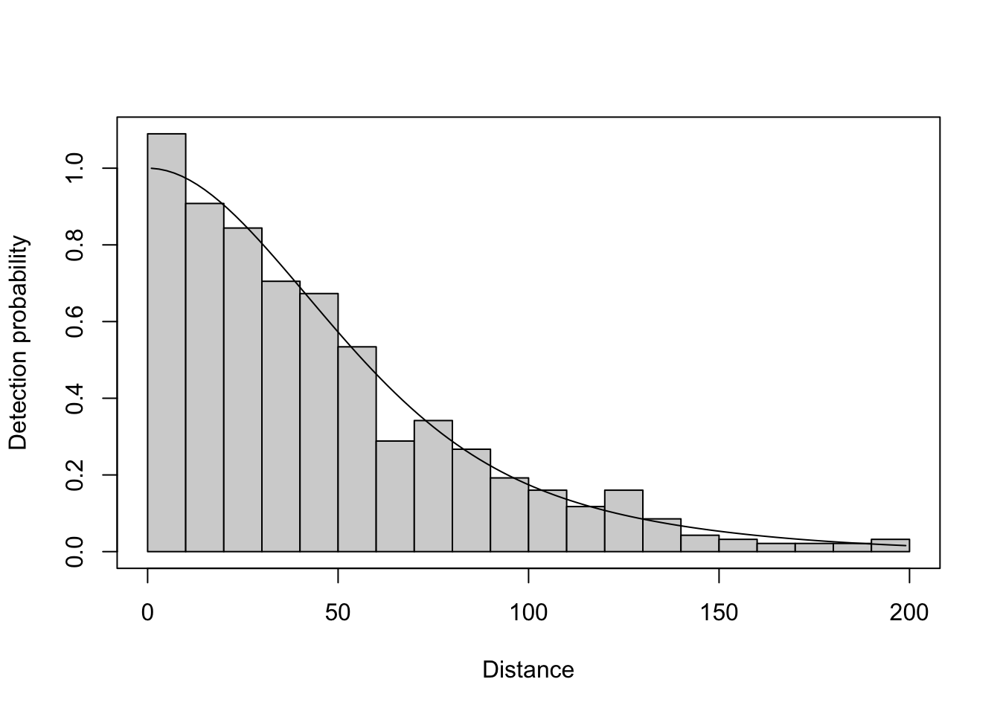

library(tidyverse)
library(Distance)
d <- read_csv("A1_data.csv")project1
Notes
- truncation distance is 200m
- distances are recorded in 10m categories (5m recoreded distance ~ in the first 10m band)
- randomly selected 1km square plots, about 1% of total plots used
- 2 x 1km line transects in each plot
Wrangling
d <- d |>
mutate(distance = distance_cat,
area = 78000,
region = "Scot")data_dict <- tribble(
~Variable, ~Description,
"Sample.Label", "ID number of the 1km square that was surveyed",
"object_id", "ID number of the observation for each individual bird detected",
"distance_cat", "Distance in m of the bird from the transect line (midpoint of 10m wide bands)",
"Urban", "Percentage of the 1km square that is Urban habitat (min = 0, max = 100)",
"Coniferous", "Percentage of the 1km square that is Coniferous forest (min = 0, max = 100)",
"Broadleaf", "Percentage of the 1km square that is Broadleaf forest (min = 0, max = 100)",
"MountainHeathBog", "Percentage of the 1km square that is Mountain, Heath, or Bog (min = 0, max = 100)",
"Freshwater", "Percentage of the 1km square that is Freshwater habitat (min = 0, max = 100)"
)
knitr::kable(data_dict)| Variable | Description |
|---|---|
| Sample.Label | ID number of the 1km square that was surveyed |
| object_id | ID number of the observation for each individual bird detected |
| distance_cat | Distance in m of the bird from the transect line (midpoint of 10m wide bands) |
| Urban | Percentage of the 1km square that is Urban habitat (min = 0, max = 100) |
| Coniferous | Percentage of the 1km square that is Coniferous forest (min = 0, max = 100) |
| Broadleaf | Percentage of the 1km square that is Broadleaf forest (min = 0, max = 100) |
| MountainHeathBog | Percentage of the 1km square that is Mountain, Heath, or Bog (min = 0, max = 100) |
| Freshwater | Percentage of the 1km square that is Freshwater habitat (min = 0, max = 100) |
d_a <- d |>
filter(species == "A",
!is.na(distance_cat))
d_b <- d |>
filter(species == "B",
!is.na(distance_cat))region_table <- tibble(Region.Label = "Scot",
Area = 78000)
sample_table_a <- unique(tibble(Sample.Label = d_a$Sample.Label,
Region.Label = d_a$region,
Effort = 2))
obs_table_a <- tibble(object = d_a$object_id,
Region.Label = d_a$region,
Sample.Label = d_a$Sample.Label)
sample_table_b <- unique(tibble(Sample.Label = d_b$Sample.Label,
Region.Label = d_b$region,
Effort = 2))
obs_table_b <- tibble(object = d_b$object_id,
Region.Label = d_b$region,
Sample.Label = d_b$Sample.Label)EDA
# ggplot(d_a, aes(x = distance_cat)) +
# geom_histogram(bins = 8) +
# theme_bw()Modeling
a_covs <- ds(
data = d_a,
truncation = 80,
transect = "line",
formula = ~ Urban + Coniferous + Broadleaf + MountainHeathBog + Freshwater,
cutpoints = c(0, 20, 30, 40, 50, 60, 70, 80),
key = "hr",
region_table = region_table,
sample_table = sample_table_a,
obs_table = obs_table_a,
convert_units = 0.001)Warning: Unknown or uninitialised column: `distbegin`.Warning: Unknown or uninitialised column: `distend`.Warning: Unknown or uninitialised column: `distbegin`.Model contains covariate term(s): no adjustment terms will be included.Fitting hazard-rate key functionAIC= 440.79plot(a_covs)
a_adj <- ds(
data = d_a,
truncation = 80,
transect = "line",
adjustment = "cos",
cutpoints = c(0, 20, 30, 40, 50, 60, 70, 80),
key = "hr",
region_table = region_table,
sample_table = sample_table_a,
obs_table = obs_table_a,
convert_units = 0.001)Warning: Unknown or uninitialised column: `distbegin`.Warning: Unknown or uninitialised column: `distend`.Warning: Unknown or uninitialised column: `distbegin`.Starting AIC adjustment term selection.Fitting hazard-rate key functionAIC= 475.102Fitting hazard-rate key function with cosine(2) adjustmentsAIC= 476.717
Hazard-rate key function selected.plot(a_adj)
gof_ds(a_covs)
Goodness of fit results for ddf object
Chi-square tests
[0,20] (20,30] (30,40] (40,50] (50,60] (60,70] (70,80] Total
Observed 120.000 43.000 21.000 7.000 4.000 4.000 1.000 200.000
Expected 112.032 47.810 23.080 8.338 4.243 2.728 1.761 199.992
Chisquare 0.567 0.484 0.187 0.215 0.014 0.593 0.329 2.388
No degrees of freedom for test# gof_ds(a_adj)A_res <- dht(a_covs$ddf,
obs.table = obs_table_a,
region.table = region_table,
sample.table = sample_table_a)
res <- data.frame(A_est = A_res[["individuals"]][["N"]][["Estimate"]],
A_lower = A_res[["individuals"]][["N"]][["lcl"]],
A_upper = A_res[["individuals"]][["N"]][["ucl"]])
# dht(a_adj$ddf,
# obs.table = obs_table_a,
# region.table = region_table,
# sample.table = sample_table_a)b_covs <- ds(
data = d_b,
truncation = 200,
transect = "line",
formula = ~ Urban + Coniferous + Broadleaf + MountainHeathBog + Freshwater,
cutpoints = c(0, 10, 20, 30, 40, 50, 60, 70, 80, 90, 100, 110, 120, 130, 140, 150, 160, 170, 180, 190, 200),
key = "hn",
region_table = region_table,
sample_table = sample_table_b,
obs_table = obs_table_b,
convert_units = 0.001)Warning: Unknown or uninitialised column: `distbegin`.Warning: Unknown or uninitialised column: `distend`.Warning: Unknown or uninitialised column: `distbegin`.Model contains covariate term(s): no adjustment terms will be included.Fitting half-normal key functionAIC= 2968.458plot(b_covs)
# b_adj <- ds(
# data = d_b,
# truncation = 200,
# transect = "line",
# # formula = ~ Urban + Coniferous + Broadleaf + MountainHeathBog + Freshwater,
# adjustment = "cos",
# cutpoints = seq(0, 200, 10),
# key = "hn",
# region_table = region_table,
# sample_table = sample_table_b,
# obs_table = obs_table_b,
# convert_units = 0.001)gof_ds(b_covs)
Goodness of fit results for ddf object
Chi-square tests
[0,10] (10,20] (20,30] (30,40] (40,50] (50,60] (60,70] (70,80]
Observed 102.000 85.000 79.000 66.000 63.000 50.000 27.000 32.000
Expected 92.796 88.193 80.089 69.940 59.034 48.388 38.742 30.511
Chisquare 0.913 0.116 0.015 0.222 0.267 0.054 3.559 0.073
(80,90] (90,100] (100,110] (110,120] (120,130] (130,140] (140,150]
Observed 25.000 18.000 15.000 11.000 15.000 8.000 4.000
Expected 23.812 18.539 14.472 11.355 8.957 7.090 5.618
Chisquare 0.059 0.016 0.019 0.011 4.077 0.117 0.466
(150,160] (160,170] (170,180] (180,190] (190,200] Total
Observed 3.000 2.000 2.000 2.000 3.000 612.00
Expected 4.444 3.501 2.742 2.132 1.645 612.00
Chisquare 0.469 0.643 0.201 0.008 1.116 12.42
P = 0.49358 with 13 degrees of freedom# gof_ds(b_adj)B_res <- dht(b_covs$ddf,
obs.table = obs_table_b,
region.table = region_table,
sample.table = sample_table_b)
res <- res |>
mutate(B_est = B_res[["individuals"]][["N"]][["Estimate"]],
B_lower = B_res[["individuals"]][["N"]][["lcl"]],
B_upper = B_res[["individuals"]][["N"]][["ucl"]])
print(B_res)Abundance and density estimates from distance sampling
Variance : R2, N/L
Summary statistics
Region Area CoveredArea Effort n k ER se.ER cv.ER
1 Scot 78000 277600 694 170 347 0.2449568 0.02426283 0.09904943
Abundance:
Region Estimate se cv lcl ucl df
1 Total 146.2999 16.00013 0.1093653 118.0762 181.27 422.8074
Density:
Region Estimate se cv lcl ucl df
1 Total 0.00187564 0.0002051299 0.1093653 0.001513797 0.002323974 422.8074Questions
1
Please use the package Distance to produce your best distance sampling model of the data for each species. Demonstrate that it is a good model and use it to estimate the abundance of each of the the two species in Scotland and associated confidence intervals.
To fit allow for differences in detectability between species, and making the assumption that the presence of one species would not help with estimation of the other, the data were split by species and two separate models were fit. For species A, the maximum observed distance was in the 70-80 meter bin, so 80m was set as the truncation distance. Since there appeared to be a pattern of higher detection of birds in the 10-20m bin than the 0-10m band, and birds are a species that may plausibly be spooked by surveyors, the first two bins were pooled to improve the hazard rate key function fit. Habitat covariates were used in the detection function as well. All of these modelling decisions were driven by AIC, goodness of fit testing, and the plot of the detection function. Using the same metrics, the model for species B was better fit by a half-normal detection function, the truncation distance was truly 200, and there was no apparent spooking of individuals as the 0-10m band was the largest, so no need for pooling of the first two bands. Those models were then used to estimate the abundance of the whole area, after the total study area and effort were added to the region, sample, and observation tables for the ds() function. From the R output:
paste0("For species A, the overall population estimate is ", round(res$A_est, 2),
" with a confidence interval between the bounds of ", round(res$A_lower, 2), " and ", round(res$A_upper, 2),
" For species B, the overall population estimate is ", round(res$B_est, 2),
" with a confidence interval between the bounds of ", round(res$B_lower, 2), " and ", round(res$B_upper, 2))[1] "For species A, the overall population estimate is 52.41 with a confidence interval between the bounds of 24.06 and 114.15 For species B, the overall population estimate is 146.3 with a confidence interval between the bounds of 118.08 and 181.27"While these are fairly wide confidence intervals, we are not surprised, as the sample size is only 200 and 612 for species A and B respectively. To extrapolate those estimates from “approximately 1% of all 1km squares in Scotland” to the whole country is a difficult task that comes with substantial error. 2
It took a lot of effort to collate the habitat data and we’re considering not collecting it in future. Can you provide advice about whether you recommend we continue to collect habitat data? (You can use the results from models)
In order to answer this question, we need to ascertain the importance of these variables to the analysis. During the model selection process, models with the habitat data included as covariates in the detection function were compared to models with just adjustment terms. The AIC values of the models with the habitat covariates were invariably lower than the models without those terms. The confidence interval on the population size estimate is wider in the covariate model than in the others, suggesting that the addition of information about habitat type exposes uncertainty not accounted for in the main model. The point estimates however, were very similar. The question of whether to continue collecting these data is more nuanced than whether it reduces the model AIC. That decision depends on funding, time, and the goal of the analysis. My opinion is: if the collection of the data is particularly arduous or expensive, and it is not imperative to report an exact standard error for the population estimate, continued collection of the habitat data is not necessary.
3
There is evidence from other studies that some birds are louder in Urban environments, but there is also more background noise. Can you describe how we might test the effects of these two factors on detectability? Also explain and justify whether this investigation is important for accurately estimating abundance.
Testing the effects of louder calls and higher background noise on detectability could be accomplished through artificial sound sources at different distances and amplitudes. However, the raised background noise and bird volume does not directly violate any assumptions of distance sampling, as detectability should be affected by background noise predictably, and since we are including the habitat covariate, that difference is being accounted for in the model. Perfect detection at a single distance (typically 0 meters) should not be affected, as birds on the line should still be just as detectable in slightly noisier conditions. The difference in background noise specifically should not affect the uniform distribution of animals or placement of lines. Independence and error of observations should also be relatively unaffected, but it is possible that animals are more likely to be closer together to communicate through the noise. That would need to be ruled out for strict adherence to the assumptions. The error associated with visual detection would be unaffected, but if auditory detection is necessary, lack of error in the urban areas would need to be proved. Non-reaction to human presence should be simple to justify, as the urban population is more used to human activity.
4
I’m trying to learn about distance sampling and it seems like there are a lot of assumptions which are not always met. Can you briefly describe a paper that develops an adaptation to the basic distance sampling model to address violations of a distance sampling assumption? Describe the assumption, the implications of violating the assumption, and a brief description of the method developed. Find a paper that we have not explored in lectures.
“Accounting for non-random samples with distance sampling to estimate population density” (Diefenbach et. al 2025) describes a method for overcoming violation of the assumption that distance measurements are uniform random variables. This assumption states that lines are equally likely to be placed at any distance from the subject, and subjects are equally likely to be at any distance from the line. This is crucial, as without it, we can not separate the drop in detections due to distance from the drop in detections due to difference in abundance of animals.
Overcoming this violation is important, as many studies are conducted in areas with human or natural landscape impediments, which may change animal abundance or transect placement.
The method presented uses auxiliary data to describe a density gradient, and a separate resource selection model, to accompany the main model to better estimate abundance. The density gradient may come from GPS locations of sighted subjects. The resource selection model may take the form of a mixed-effects logistic regression model with covariates describing the distance from landscape features, habitat type, etc.
Diefenbach, D. R., Trowbridge, J., Van Buskirk, A., McConnell, T., Lamp, K., Marques, T. A., Walter, W. D., Wallingford, B. D., & Rosenberry, C. S. (2025). Accounting for non-random samples with distance sampling to estimate population density. Journal of Applied Ecology, 62, 986–994. https://doi.org/10.1111/1365-2664.70006